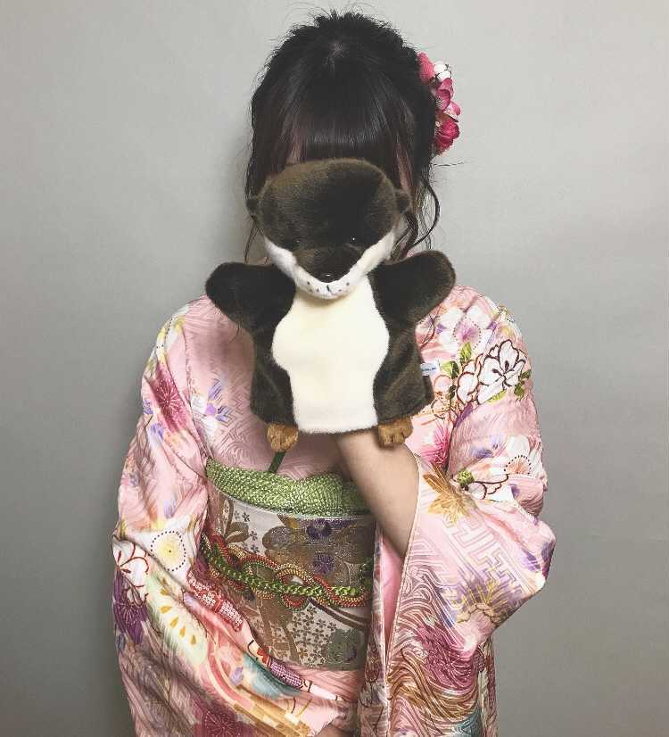
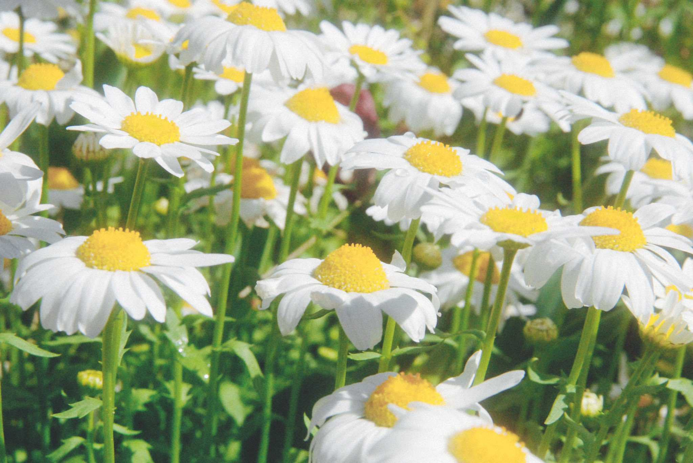
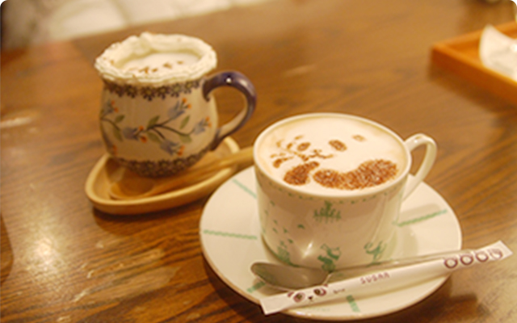

Web Designer
Mana Ootani
About

おおたに まな 埼玉県出身 1999/08/29
社会福祉法人の総務課として３年間勤務。
法人サイトリニューアルをきっかけにWeb制作に興味を持ち2021年５月、デジタルハリウッドbyLIGに入学。
お客様の気持ちに寄り添い、一緒に答えを導き出すことのできるデザイナーになるために日々勉強に励んでいます。


Favorite
- 
Camera
父の趣味がカメラだったことをきっかけに、写真を撮ることが好きになりました。花や風景の写真を撮ることが特に好きです。写真は私の撮影したマーガレットです。
- 
Cafe
カフェ巡りが好きです。お店の雰囲気、こだわりのドリンク、フードメニューを堪能することが楽しみです。最近はメニューをテイクアウトして自宅で楽しむことも多いです。
-
Game
FPS、TPSのゲームが大好きです。
中でもバトルロイヤルのゲームをよくプレイします。自分がプレイするのはもちろん、YouTubeで実況動画もよくみます。
Hometaown
埼玉県深谷市出身。
新1万円札の顔で話題の渋沢栄一の故郷でもあります。
また、深谷ねぎが有名でゆるキャラ
『ふっかちゃん』の頭にもあしらわれています。雰囲気の良いカフェや公園がたくさんあり、とても住みやすい場所です。